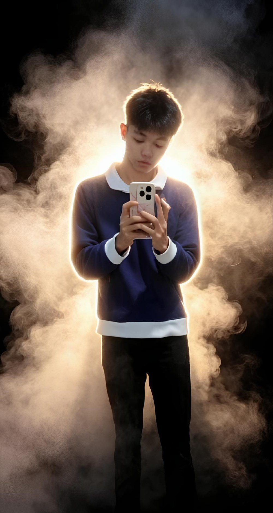
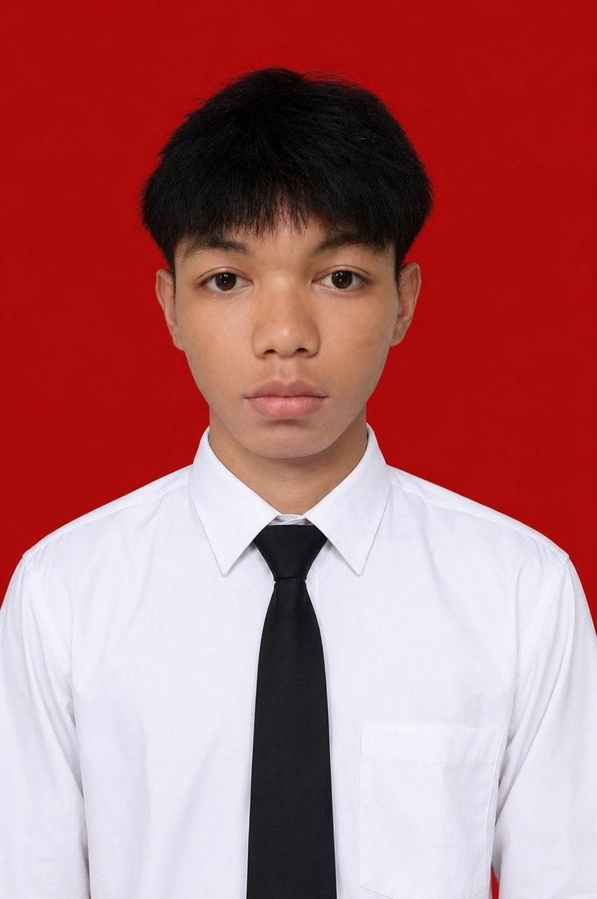

AI Exploration
Artificial Intelligence membuka banyak kemungkinan baru dalam kehidupan manusia. Saya tertarik mempelajari bagaimana AI bekerja dan bagaimana manusia berinteraksi dengannya.
SISTEM ONLINE
Saya Nendi, seseorang yang tertarik pada perkembangan teknologi, kecerdasan buatan, coding, dan dunia kreatif digital.
Bagi saya, teknologi bukan sekadar sesuatu yang digunakan. Teknologi adalah ruang untuk bereksperimen, belajar, dan menciptakan sesuatu yang sebelumnya hanya ada dalam pikiran.


01 / TENTANG NENDI
Saya percaya bahwa rasa ingin tahu adalah awal dari setiap penemuan.
Ketertarikan saya terhadap teknologi membawa saya untuk terus mempelajari berbagai hal, mulai dari Artificial Intelligence, pemrograman, hingga proses kreatif dalam membangun karya digital.
Saya tidak ingin hanya menjadi pengguna teknologi. Saya ingin memahami bagaimana sesuatu bekerja, mencoba kemungkinan baru, dan mengubah ide menjadi eksperimen nyata.
02 / PROYEK PILIHAN
Berbagai proyek dan eksperimen ini adalah bagian dari perjalanan belajar dan eksplorasi teknologi. Setiap karya memiliki proses, tantangan, dan tujuan yang berbeda.
03 / EKSPLORASI TEKNOLOGI
Artificial Intelligence membuka banyak kemungkinan baru dalam kehidupan manusia. Saya tertarik mempelajari bagaimana AI bekerja dan bagaimana manusia berinteraksi dengannya.
Coding adalah cara untuk mengubah ide menjadi sesuatu yang dapat digunakan. Saya belajar lewat eksperimen, pengembangan proyek, dan mencoba berbagai pendekatan.
Melalui konten, saya mengeksplorasi cara menyampaikan informasi dan mengubah topik yang kompleks menjadi sesuatu yang lebih mudah dipahami.
NAZE adalah identitas kreatif: ruang untuk bereksperimen, membangun ide, dan menghasilkan karya digital, dari motion graphics hingga coding.
04 / KEAHLIAN
05 / PERJALANAN
Perjalanan saya dalam dunia teknologi masih terus berjalan. Saya tidak menganggap proses belajar sebagai sesuatu yang memiliki garis akhir.
Awal dari setiap penemuan.
Mengubah ide menjadi eksperimen dan proyek.
Selalu ada teknologi baru untuk dipahami dan ide baru untuk dicoba.
06 / AKTIVITAS GITHUB
07 / KONTAK
Terbuka untuk berbagi ide, berdiskusi tentang teknologi, dan mengeksplorasi kemungkinan baru bersama.
NENDI · Purbalingga, Indonesia